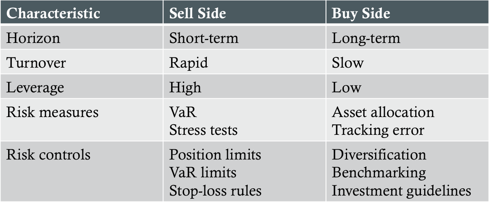

Risk Budgeting
Definition: The process of allocating and managing risk using a top-down approach to different aspects of the investment process
Risk Management for Sell- and Buy-Sides

Two Step Investment Process
- Asset-allocation
- Typically based on mean-variance portfolio optimization
- Determines amount to be invested in various asset classes
- Relies on benchmarks/passive indices that represent feasible investment strategies
- Delegate management to selected active managers
Investment Management Risks
- Absolute risk - risk of a dollar loss over the horizon
- Relative risk - risk of a dollar loss in a fund relative to its benchmark
- Policy-mix risk - risk of a dollar loss owing to the policy mix selected by the fund
- Active-management risk - risk of a dollar loss owing to the total deviations from the policy mix
- Funding risk - risk that the value of assets will not sufficiently cover the liabilities of a fund
- Cash flow risk - risk of year-to-year fluctuations in contributions to a fund
- Economic risk - risk of variation in total economic earnings of a plan's sponsor